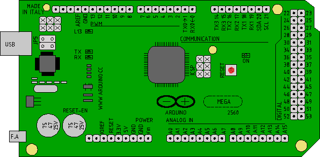
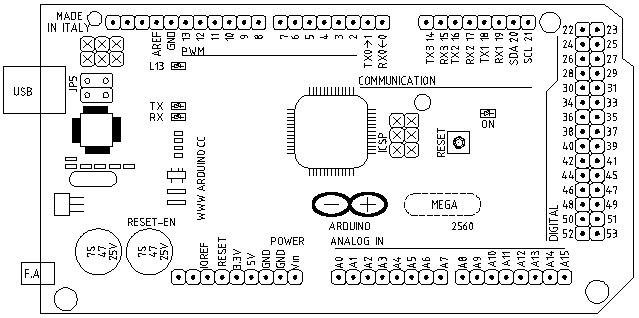

INTRODUCCIÓN
En este página web, sera el almacen de
todos
mi aprendizaje en la programación de arduino, partiendo desde un
nivel basico.
Me servira como libro de apuntes en la
web, y si a alguien mas le sirve, pues me me alegro.
En primer lugar, arduino era una palabra que
oia
mucho, con una filosofia de hardware abierto y una potencia
grande.
Lo primero que hice fui comprar un
arduino mega 2560, creo que no es el R3 por el precio, lo compre o
mejor dicho me lo compraron atraves de Ebay.
Ahora llega la hora de enredar con el.
El primer libro que lei fue Guia basica de arduino publicacion bajo
licencia
creativecommons.
En esta obra aprendes lo basico
para hacer funcionar el arduino, programas, productos,
instrucciones... Tiene cantidad de ejemplos basicos que me
ayudaron a
relacionarme con el entorno de programación.
Despues de esta primera experiencia, me anime
por
comprar un libro en papel, por eso de la comodidad, no se
calienta, no
se le acaba la bateria, se ve sin reflejos y alguna ventaja mas...
Prepare mi arduino mega con 4 leds, y tres
pulsadores, un potenciometro y un ldr, montado en una
protoboard,
y a partir de aqui a realizar practicas, que con un poco de
imaginación
a partir de los conocimientos adquiridos, empezamos a hacer
programas
basicos para
utilizar mi arduino para domotizar una vivienda.
Algunos programas que he
hecho al principio, me he complicado mucho la vida, mas adelante y
a
medida que ve sketch consigues los efectos con mas simplicidad.
Estos programas "enredados" apreceran el la web en rojo, por si me puede valer la idea para otros programas.
El fin ultimo es conseguir programar una instalación domótica con arduino, en la red he encontrado dos proyectos bien documentados.
-
Taller domotica basado en arduino
- Excontrol domotica con arduino
ESQUEMAS
Dibujos de la placa de arduino, realizado con librecad.
Archivo en dxf.Placa arduino exportada a png y colereada con GIMP

Placa arduino exportada desde libreCAD a PNG.

ESQUEMA
DE CONEXIONES
Aqui tengo que poner el Esquema de conexiones
dibujado con librecad 2.0 en formato DXF.
INDICE
- Contador de minutos y segundos
- INTERES
- Contador de tiempo con la funcion milis()
- PROGRAMAS.
- ContadorSegundos
- Iluminacion regulada con LDR
- Preguntas
- Telerruptor
- Tiempo
- Pulsación Larga Corta
- Mando de IR
- Encendido de un led por pulsador o IR
- Encendido de led con contador de pulsos
FALLOS TIPICOS.
comparación == poner
asignacion =,
falta ; al final.
no confundir != distinto, con =! asignacion de cambio de estado